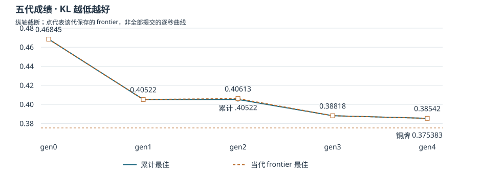

PRAXIST 0064 · HMS 轨迹分析
分析对象：hms-harmful-brain-activity-classification。沿用六层框架，审计日期 2026-09-04。本文分析已归档的研究过程；所有输入只作为证据读取，未执行轨迹中的代码或提示。
最有证据支持的主线是：研究者修正验证方法、重新打开被误关的方向，并通过消融缩小可接受的解释范围。最终 KL 为 0.38542，低于 gen0 最佳 0.46845，但仍高于铜牌门槛 0.375383。这些过程证据支持“协作中发生了有用的纠错”，尚不能估计 PRAXIST 相对单代理或其他架构的因果增益。
L1 · 先确认我们在分析什么
这次运行的实际版本是 PRAXIST 0.2.0，commit 385ef1fe98fe5f51c96ef146ef6a7ea9ecd445f6。这个版本号描述生成轨迹的历史系统，与分析工具或当前仓库版本分开。运行起于 2026-08-23 22:18:01 UTC，末期预算记录在 2026-08-25 01:12:15 UTC；run summary 总时长约 26.90 小时。提交了 gen0–gen4 五代，各代有 12 个不同 peer。status 为 succeeded，停止原因是 wall_clock_limit；不能解释为达到了铜牌或研究目标。运行元信息；运行汇总。
归档是 audit-lean：不含数据集与完整运行环境，不能从此包完整重放训练。清单 1,543/1,543 个条目的大小、SHA-256 全部匹配；这验证的是所提供脱敏包的内部完整性。最终 CSV 哈希也与 package、grade 一致。独立检查 CSV 有 9,850 行、六个概率列，值有限且每行和接近 1；含 1,693 个不同 eeg_id。缺少 sample submission 和标签，本次没有重新核定行对齐、重复 ID 契约或重算 KL。
| 观察单位 | 数量 | 可以如何解释 |
|---|---|---|
| safe trajectory 事件 | 2,014 | 被筛选保留的事件，不等于完整工具轨迹 |
| agent.run_started / finished | 674 / 674 | agent 调用次数，不是训练或提交次数 |
| finding | 1,310 | 327 result、894 insight、28 error、59 hypothesis、2 late_result_signal |
| 带官方 attempt ID 的 finding | 191 | 多条 finding 可以指向同一次提交 |
| finding 引用的不同 attempt ID | 175 | 引用范围，不等于归档里保留了 175 份评分记录 |
| 保留的不同 attempt ID | 145 | 145 份均有成绩；仅为可审计子集，不是全程实验总数 |
全部 findings 标记 legacy_weak；其 source_event 引用在筛选后的 safe trajectory 中不可逐条闭合。这降低原始来源可验证性，但不能据此判定原始运行损坏。175 个被引用的 attempt ID 与 145 个保留日志中的 ID 只有 70 个重合：105 个被引用 ID 缺独立日志，另有 75 个保留 ID 未被当前索引引用。这两个集合不是包含关系，不能只用 175−145 估算缺失数量。有独立 attempt 日志的交集内未发现分数冲突；没有独立日志的分数仍保留为较弱层级。尤其 gen2 frontier 的 0.40613 来自 finding/frontier，其独立 attempt 未保留，保留日志中该代最低分为 0.40649；两者的证据覆盖范围不同。
L2 · 分开呈现当代结果和全程最佳

KL 越低越好。表中“当代最佳”采用每代提交时保存的 top_1 frontier；“累计最佳”是这五个 frontier 点的累计最小值，不伪装成全部提交的逐秒曲线。
| 代 | 当代 frontier 最佳 | 累计最佳 | Finding | 保留 attempt | 主要变化 |
|---|---|---|---|---|---|
| gen0 | 0.46845 | 0.46845 | 198 | 109 | 基础成员、校准、组合器与 fold-mean 升级 |
| gen1 | 0.40522 | 0.40522 | 240 | 17 | 修正准入规则，完整重拟合组合器 |
| gen2 | 0.40613 | 0.40522 | 332 | 7 | 探针与验证；没有刷新 incumbent |
| gen3 | 0.38818 | 0.38818 | 230 | 6 | 重新开放 lambda 轴，正则化 head 改善 |
| gen4 | 0.38542 | 0.38542 | 310 | 6 | 消融、种子对照与最终组合 |
gen0 最佳到最终下降 0.08303（17.72%）；相对铜牌还差 0.010037。这不是相对初始模型的净提升，也不是 PRAXIST 架构的净贡献。评分来自 official_grader_live，标注 experimental_private_feedback：它是经历反馈选择后的官方成绩，不是一次未触碰测试集的独立泛化估计。最终评分。
gen2 是重要的反例：小权重 probe 从 0.40522 变成 0.40613，恶化 0.00091，但几乎精确命中预注册预测 +0.0009。记录里的 PASS 是“命中允许的预测区间”，不是“新模型更好”。将其画成持续进步会抹去真正的负证据。执行者是 gen2_peer6，gen2_peer7 是核验和转述者。8f69b354。
L3 · 把干预、验证和重组拆开
第一条强链是 质疑验证方式 → owner 修订 → 逐折确认 → 新成绩。gen3_peer11 原先以训练内 mirror 排名关闭 lambda 轴；peer4 的第三方检查指出逐折 CV 的排序相反。owner 随后公开接受纠错、重新开放方向。lambda=3e-3 的确认 CV 均值相对线性头约 -0.01723，10/10 折改善，通过事先给出的 -0.016 与至少 7 折门槛，随后构建并取得 0.38818。第三方质疑 → 接受并重开 → 新成绩；公开修订工具记录。
这里有两种必须分开的对照：0.402→0.38818 是同 head lineage 的改善 -0.01382；0.40522→0.38818 是相对先前线性基线的改善 -0.01704。原 frontier 把 -0.01382 也写成相对 0.40522，并使用 -0.01404 计算转移比例，算术不一致。本文保留官方分数、重算差值，不采用其“正则化增益转移约 3 倍”的定律式结论。
第二条强链是 把归因写成可失败的消融。C1 删除 patient_prior 与 patient_prior320 两个成员，并重拟合 head；两组 seed pair 下均优于各自的 9 成员结果。
| 初始化种子 | 9 成员 head | C1（删除两成员） | C1 − 9 成员 |
|---|---|---|---|
| 0 / 1 | 0.38818 | 0.38622 | -0.00196 |
| 123 / 456 | 0.38715 | 0.38545 | -0.00170 |
这是两组同种子配方对照，增强“当前配方中的两个 patient-prior 成员没有带来净收益”的证据。它仍不是完全隔离变量的因果实验：删除成员会伴随初始化参数裁剪与重拟合，原 anchor 和复核代码的线程环境也需要对齐；同次重拟合 anchor 没有另行官方评分。不能扩大成“患者先验一般无用”或“去掉了所有 prior”。knnprior 仍保留。C1 初次评分；9 成员种子对照；C1 种子对照；消融构建代码。
打乱 logit 行对应关系的空对照 KL 为 1.40367，相对 .38818 恶化 1.01549。它支持行级输入信号的重要性，不能单独证明模型无患者泄漏，也不能把全部 head 收益归到特定机制。0b60dc0f。
第三条链是 确实发生了重组，但收益不能因此归于重组。最终 c10np 结合 C1 删除成员的做法、cnfm10 栈以及 seed 123/456。日志中能看到 owner 读取 C1 结果，代码也实际删除对应列。最终 0.38542 仅比同种子的 C1 0.38545 好 0.00003。观察到的换种子变化分别是 0.00103 与 0.00077，远大于这点差距；它们是模型拟合扰动，不是官方评分器的随机噪声、置信区间或等效性检验。读取 C1 结果；实际组合代码。
最终代码有 7 个成员合计，42 个 logit 输入列：gbmv2、speccnn、lgbm、knnprior、p11、enb0、cnfm10；不是“7 个成员再加 cnfm10”。MLP h=48，lambda=3e-3，seed=123/456；按 restricted→linear→MLP 链初始化，最终 maxiter=400，裁剪后归一化写出。cnfm10 名字中的 10 不代表最终有十个成员。
最终相对 c10 head .38763 的 -0.00221 也不能直接叫“纯消融增益”：c10 head 调用默认 fit_mlp，而最终显式改用 123/456；现有代码记录表明默认 head 采用 0/1。此外 C1 与最终的初始化链不同，需另做一致控制才可辨认 cnfm10 的边际贡献。
L4 · 负证据是否改变了下一步行动
负结果至少呈现三种不同作用。gen2 探针帮助校准预测而没有刷新最佳；gen3 的 head-as-member 嫁接虽然报告 OOF 10/10 折改善，官方却从 .39732 恶化到 .40330，说明该训练/测试构造中的局部改善没有可靠迁移；末期 owner 两次明确拒绝没有充分依据的新增提交，即便还有空闲租约。嫁接失败；第一次不提交；再次不提交。
这些是负知识影响具体决策的案例。不能把所有 insight 当成发现、把 variant 标签数量当作实验多样性，或把记录中的 no-submit 一律算成节省了一次失败训练。要估计“避免了多少失败”，还缺一个可观察或随机化的反事实提交政策。
后续审计还修改了最终 frontier 的解释：
| 初始说法 | 后来的证据 | 本次采用的解释 |
|---|---|---|
| 最终 CV 改善 ZERO-FILL-DOMINATED | fold0–5 均值 -.004208，越过既定 -.004 阈值；owner 改成 MIXED | late folds 改善幅度更大，但不能沿用旧分类 |
| 最终构建完全确定、逐字节可复现 | 第三方两个环境均未逐字节复现；owner 承认原环境未写入 meta | 保存的已评分 CSV 可核验；重新生成的数值环境未完全闭合 |
| CV gate 通过证明删除 prior 有效 | gate 主要比较最终组合与 9 成员；c10 内消融 CV +.000756、仅 4/10 改善 | gate 对组合方案给出准入，未独立验证每个组成改动 |
MIXED 修订；环境复核；owner 接受环境限制。此外，最终 CV 的 MLP maxiter=200，部署构建为 400，不能称作完全相同的训练预算。CV 代码；部署代码。
L5 · 协作信息是否真的被继承
本案最值得保留的证据图，是上面的“第三方质疑→接受→重开→代码→评分”，以及“C1 结果被读取→删除列→新组合”。它们比自动图中的普通引用边更能说明知识进入了行动。随附 evidence_edges.json 将 challenged_by、accepted_correction、decision_to_execution、seed_control 与 read_and_recombine 分开；这是人工核验的局部图，不把全部自动连边当作学习或贡献。
PI/Chair 交接也不能只看表面成功。五次边界都记为 failed_non_strict，但前两次 validation 的 valid 为 true、没有 schema blocking issue；失败来自 audit 中退役结论缺少适用边界或 revive_if。后三次同时缺少下一代 peer 合同。
| 交接 | validation | audit | 主要缺口 |
|---|---|---|---|
| gen0→1 | valid | fail | 8 条退役结论缺 boundary 或 revive_if |
| gen1→2 | valid | fail | 10 条退役结论缺 boundary 或 revive_if |
| gen2→3 | invalid | fail | 缺 gen3 peer9/10/11，9/12 合同，另有退役条件缺口 |
| gen3→4 | invalid | fail | 缺 gen4 peer10/11，10/12 合同，另有退役条件缺口 |
| gen4→5 | invalid | fail | 缺 gen5 peer11，11/12 合同；gen5 未执行 |
来源为各 synth_gen*_to_* 下的 validation.json 与 audit.json。自动警告不是对 Chair 捏造的事实裁定。更稳妥的结论是：局部协作纠错链可见，面向全体下一代的结构化交接并未稳定通过审计。缺少 revive_if 也使负知识难以区分“永久否定”和“条件变化时值得重试”。
L6 · 经济性与因果结论的边界
预算账本最后一笔 usage 记录 4,173,097,830 tokens，批准量为 60,000,000，budget_overrun=true，原因标注 usage_partial；另有 usage_unknown 明确把 gpu_hours 记为未知。这个异常不能忽略，也不能直接当作已核实账单。需先对齐 provider 用量、缓存口径、父子调用、重复累计与计费价格，再评价经济性。26.90 小时是墙钟时间；674 次 agent 调用不是 GPU 工作量。预算记录。
因此，本包能支持研究过程与结果审计，不能可靠计算美元成本、GPU 小时收益率或“每 token 的真实收益”。末期不训练仍可能消耗模型调用、调度与审计成本。
| 研究问题 | 本案回答 | 还不能推出什么 |
|---|---|---|
| RQ1 是否在学习、纠错？ | 有明确的验证方式纠错与重新实验链；gen2 的信息增益与成绩增益需分开 | finding 数、引用数或熵变化本身不能证明学习 |
| RQ2 是否产生新方案与有效重组？ | 有 nonlinear head 和 c10np 的可执行组合证据 | 最终比 C1 好 .00003，不能认定重组带来独立收益 |
| RQ3 负知识是否约束行动？ | 有失效边界、失败嫁接和两次 no-submit 行动记录 | 缺完整反事实，不能估计避免失败率 |
| RQ4 协作/记忆是否有效？ | 第三方纠错被 owner 采纳，随后出现新成绩 | 单次观察不能量化多代理、PI、共享记忆各自贡献；交接 audit 也未通过 |
| RQ5 是否经济？ | 可见预算超额标记与未知 GPU 用量 | 账本未对账，无法给出可信效率或架构成本优势 |
若下一步做研究性比较，应把同一任务、初始资产、模型、评分反馈额度与计算预算锁定，比较单代理、共享记忆、验证者和 PI 等条件，多随机种子重复。局部机制上，优先补齐“cnfm6/cnfm10 × 保留/删除两 prior × seed pair”的统一初始化与固定数值环境对照，用独立于调参反馈的评估集评判。这样的设计才能把当前的过程证据推进到更强的因果结论。
证据与交付文件
随附 19 个干预条目，每条保留父版本/对照、机制、分数、明确差值、attempt 留存状态及来源。intervention_table.json 不是自动声称的完整实验树；evidence_edges.json 是局部过程证据图；generation_summary.json 区分每代 frontier 与累计最佳；analysis_checks.json 保存 CSV 检查、缺失 attempt 引用和成本原始字段。
audit_summary.json、finding_index.json 与 retained_official_attempts.json 提供更完整的机器可读索引。report.html 是六层报告阅读版；analysis.html 是带代次筛选、研究谱系、发现检索和基线对照的交互探索版。没有公开发布新的 HMS 数据。
可展开的干预证据
I01 · gen0 · res50 单成员升级0.46845
对照：0.46948 的 v41d 差值：-0.00103
固定权重与温度，将 res50 fold0 成员替换为 6-fold 均值
局部官方 A/B 支持 -0.00103；fold0 mirror 对这个升级不独立。
I02 · gen1 · 修正准入规则并完整重拟合0.40522
对照：LORO-C1 组合器 差值：-0.01433
重建基线，加入 cnfm6 并完整重拟合；改用 all-em/disjoint/per-fold 规则
改善 -0.01433；规则和拟合方式一起改变，不能把全部增益归于讨论机制。
I03 · gen2 · c6 小权重探针0.40613
对照：gen1 incumbent 差值：+0.00091
在既有 logit 上加入 0.02 × v3blend
成绩变差 +0.00091；PASS 指预测区间命中，不指胜过基线。执行者 peer6，peer7 转述。
I04 · gen3 · 第一版 MLP head0.40200
对照：线性组合器 差值：-0.00322
采用 48 隐层、lambda=1e-3 的 MLP head
官方 .402；是后续正则化比较的直接父版本。
I05 · gen3 · 第三方验证纠错无官方分数
对照：已经关闭的 lambda 轴 差值：—
peer4 用逐折 CV 质疑 in-sample 排名，提出重新检查 lambda=3e-3
独立验证报告和后续 owner 接受记录支持知识被采用；不是架构因果消融。
I06 · gen3 · 接受质疑并重新开放搜索无官方分数
对照：in-sample closeout 差值：—
owner 公开修订结论，锁定逐折确认门槛后继续实验
纠错先于新成绩；后续代码和评分形成行动链。
I07 · gen3 · 正则化 head 改善0.38818
对照：同 lineage 的 .402 head 差值：-0.01382
lambda 从 1e-3 调为 3e-3，h=48；逐折 CV 确认后官方评分
直接父版本差值 -0.01382；相对 .40522 线性基线差值是 -0.01704。
I08 · gen3 · head 作为新成员的嫁接失败0.40330
对照：cnfm10 基线 差值：+0.00598
把 head 输出作为成员嫁接回组合器
官方 .40330，变差 +0.00598，尽管报告逐折 OOF 10/10 改善。
I09 · gen4 · C1 去掉两个 patient-prior 成员0.38622
对照：9 成员 head，seed 0/1 差值：-0.00196
删除 patient_prior 和 patient_prior320 对应 12 个 logit 列并重拟合；保留 knnprior
同种子名义对照改善 -0.00196；线程与初始化处理需一起核对，非完全隔离变量的因果试验。
I10 · gen4 · 逐列打乱 logit 行的空对照1.40367
对照：9 成员 head 差值：+1.01549
打乱训练和测试 logit 列中的行对应关系
恶化 +1.01549，支持行级信号重要；不能证明无患者泄漏。
I11 · gen4 · 9 成员换种子对照0.38715
对照：9 成员 head，seed 0/1 差值：-0.00103
MLP 初始化种子改为 123/456
改善 -0.00103；这是换种子后模型的变化，不能当作官方评分器噪声估计。
I12 · gen4 · C1 换种子对照0.38545
对照：C1，seed 0/1 差值：-0.00077
相同 C1 配方，初始化种子改为 123/456
改善 -0.00077；与同种子 9 成员 .38715 比，C1 改善 -0.00170。
I13 · gen4 · c10 head0.38763
对照：gen3 9 成员 head 差值：-0.00055
cnfm6 换成 cnfm10，并改为 restricted→linear→MLP 初始化链
改善 -0.00055；这是组合改动，不是纯 member-swap 实验。
I14 · gen4 · 最终 c10np0.38542
对照：C1，seed 123/456 差值：-0.00003
c10 栈删除两个 patient-prior 成员，使用 seed 123/456、lambda=3e-3、h=48
官方 .38542，仅比 C1 好 .00003；初始化链/环境尚有差异，不能识别重组的独立收益。
I15 · gen4 · 区域标签更正无官方分数
对照：最终 frontier 的 ZERO-FILL-DOMINATED 叙述 差值：—
owner 接受复核，按原阈值改为 MIXED
fold0–5 均值 -.004208 已越过 -.004 门槛；不能继续复述旧标签。
I16 · gen4 · 环境敏感性复核无官方分数
对照：最终构建完全确定的声明 差值：—
第三方在两个环境下重建 c10np，报告均非逐字节一致
区分已保存 CSV 哈希一致与从源代码重新生成一致。
I17 · gen4 · 接受环境敏感性结论无官方分数
对照：旧的完全确定叙述 差值：—
owner 承认原环境未写入元信息，修订后续交接
已评分 CSV 仍有效；不升级为完整可复现结论。
I18 · gen4 · 拒绝无依据的新增提交无官方分数
对照：末期空闲算力租约 差值：—
owner 记录 no-submit 决策，保持已锁定计划
可见约束行动；不能计算全局避免失败率或把零 GPU 消耗等同零成本。
I19 · gen4 · 再次拒绝无依据的新增提交无官方分数
对照：第二次空闲算力租约 差值：—
决策依据未变，继续 no-submit
再次行动记录；不另计为一次训练实验。